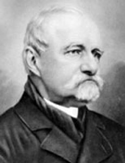
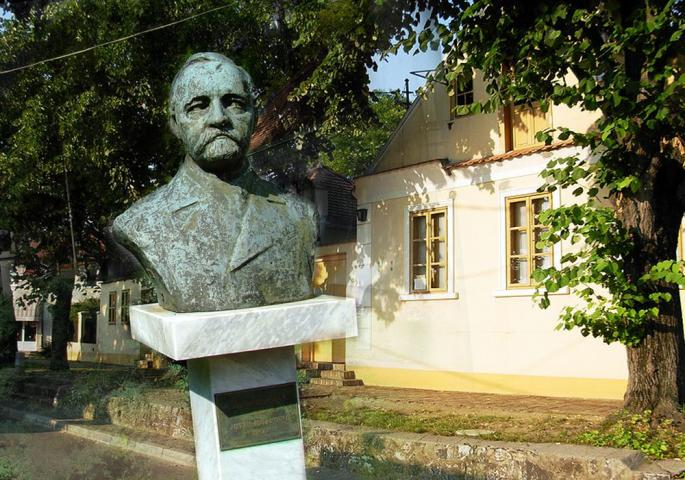

Jovan Jovanović Zmaj
Jovan Jovanović Zmaj (Novi Sad, 6. decembar 1833 — Sremska Kamenica, 14. jun 1904) je bio jedan od najvećih liričara srpskog romantizma. Po zanimanju bio je lekar, tokom celog svog života bavio se uređivanjem i izdavanjem književnih, političkih i dečjih časopisa. Najznačajnije Zmajeve zbirke pesama su „Đulići“ i „Đulići uveoci“, prva o sretnom porodičnom životu, a druga o bolu za najmilijima. Pored lirskih pesama, pisao je satirične i političke pesme, a prvi je pisac u srpskoj književnosti koji je pisao poeziju za decu. Sremska Kamenica je nekada nosila ime Zmajeva Kamenica, u čast Jovana Jovanovića Zmaja.
Osnovnu školu je pohađao u Novom Sadu, a gimnaziju u Novom Sadu, Halašu i Požunu. Posle završene gimnazije upisao je studije prava u Pešti, a studirao još i u Pragu i Beču. Za njegovo književno i političko obrazovanje od posebnog značaja je boravak u Beču, gde je upoznao Branka Radičevića, koji je bio njegov najveći pesnički uzor. Takođe u Beču upoznao se i sa Svetozarem Miletićem i Đurom Jakšićem.
Posle završenih studija prava, Zmaj se 1860. vratio u Novi Sad i kao jedan od najbližih Miletićevih saradnika postao službenik u novosadskom magistratu. Tu se upoznao sa svojom budućom suprugom Ružom Ličanin. Ljubav i srećan porodičan život nadahnuli su Zmaja da napiše ciklus (zbirku) pesama Đulići (od turske reči Gül, što znači ruža).
Ipak, služba u magistratu nije mu odgovarala, pa ju je napustio i posvetio se književnom radu. Tada je pokrenuo književni časopis Javor i satirični list Komarac. Godine 1863. preselio se u Peštu, gde je radio u Matici srpskoj i kao nadzornik Tekelijanuma. Godine 1864. pokrenuo je satirični list Zmaj (igra rečima, pošto je 3. maj po julijanskom kalendaru bio dan održavanja Majske skupštine 1848), čiji će naziv postati sastavni deo njegovog imena.
Godine 1870. Zmaj je završio studije medicine, vratio se u Novi Sad, gde je započeo svoju lekarsku praksu. Ovde ga je ubrzo zadesila porodična tragedija: umrla su mu deca, a potom i žena. Iz ove porodične tragedije proizišao je niz elegičnih pesama objavljene pod zajedničkim nazivom Đulići uveoci.
Književni rad
Dve najbolje zbirke njegovih pesama su „Đulići“ i „Đulići uveoci“. Veliki broj njegovih šaljivih i dečjih pesama, štampanih po raznim listovima i časopisima, izašao je u dva izdanja celokupnih dela: „Pevanija“ i „Druga pevanija“. Poslednje su štampane zbirke: „Snohvatice“ i „Devesilje“. U prozi je napisao jednu pesničku legendu („Vidosava Branković“) i jedan šaljivi pozorišni komad („Šaran“).
Žaba čita novine
Sedi žaba sama
na listu lokvanja,
od žarkoga sunca
štitom se zaklanja.
Da novine čita,
to vam slika kaže,
al ne mož da nadje
što joj oči traže.
Znate već o čemu
žabe brigu vode:
hoće li se skoro
odseliti rode.
Tiho noći
Tiho noći, moje sunce spava;
Za glavom joj od bisera grana;
A na grani k’o da nešto bruji
– To su pali Sićani slavuji:
Žice predu iz svilenog glasa
Otkali joj duvak do pojasa
Pokrili joj i lice i grudi
– Da se moje Sunce ne probudi.
Laza
Prst iz usta Lazice,
pa se malo mejki,
da pokažeš zubiće,
tati, mami, tejki.
Beli su ti zubići,
zašto da se stide,
dve rupice na obrazu,
to ćeš dati pride.